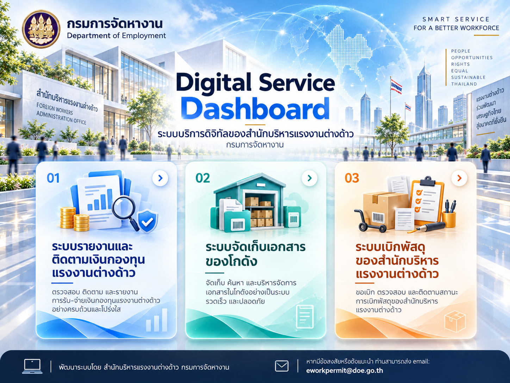

เข้าสู่ระบบรายงานและติดตามเงินกองทุนแรงงานต่างด้าว เข้าสู่ระบบจัดเก็บเอกสารของโกดัง เข้าสู่ระบบเบิกพัสดุของสำนักบริหารแรงงานต่างด้าว
เข้าสู่ระบบรายงานและติดตามเงินกองทุนแรงงานต่างด้าว เข้าสู่ระบบจัดเก็บเอกสารของโกดัง เข้าสู่ระบบเบิกพัสดุของสำนักบริหารแรงงานต่างด้าวรายงานข้อมูล ติดตามความเคลื่อนไหว และตรวจสอบสถานะเงินกองทุน
เข้าสู่ระบบ ↗จัดเก็บ ค้นหา และบริหารจัดการเอกสารภายในโกดังอย่างเป็นระบบ
เข้าสู่ระบบ ↗ดำเนินการขอเบิก ตรวจสอบ และติดตามสถานะการเบิกพัสดุ
เข้าสู่ระบบ ↗